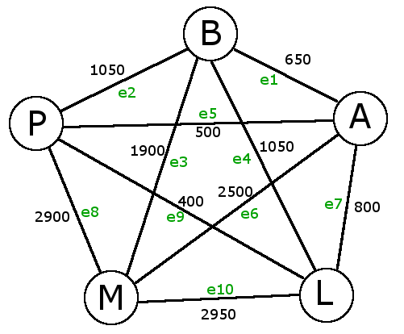

4.2 Matrixdarstellungen von Graphen
a)
Bei dieser Darstellung handelt es sich um eine Adjazenzmatrix, weil sie Knoten mit Knoten eines Graphen verknüpft. Hier stellen die Werte der Matrix die Entfernung zwischen zwei Städten dar, bei einer Inzidenzmatrix gibt es nur die Werte 0 und 1, die angeben, ob eine Kante zwischen zwei Knoten existiert.b)
Die Netzwerktopologie ist ein Graph, da jeder Knoten mit jedem anderen Knoten verbunden ist.
c)
| e1 | e2 | e3 | e4 | e5 | e6 | e7 | e8 | e9 | e10 | |
|---|---|---|---|---|---|---|---|---|---|---|
| Berlin | 1 | 1 | 1 | 1 | 0 | 0 | 0 | 0 | 0 | 0 |
| Amsterdam | 1 | 0 | 0 | 0 | 1 | 1 | 1 | 0 | 0 | 0 |
| Paris | 0 | 1 | 0 | 0 | 1 | 0 | 0 | 1 | 1 | 0 |
| Moskau | 0 | 0 | 1 | 0 | 0 | 1 | 0 | 1 | 0 | 1 |
| London | 0 | 0 | 0 | 1 | 0 | 0 | 1 | 0 | 1 |
(Tabelle erstellt mit http://www.tablesgenerator.com/html_tables)
Der Vorteil einer Adjazenzmatrix ist, dass die Entfernungen zwischen den Knoten direkt sichtbar sind. Inzidenzmatrizen hingegen sind kompakter und geben einen schnellen Überblick darüber, welche Knoten mit einer Kante verbunden sind.
d)
gerichtet:Ein Graph ist gerichtet, wenn die Kanten mit einer Richtung versehen sind. Der Graph aus a) ist ungerichtet, da die Kanten keine Richtung haben.
vollständig:
Ein Graph ist vollständig, wenn alle Knoten über Kanten miteinander verbunden sind. Dies ist bei dem vorliegenden Graphen der Fall, also ist der Graph vollständig.
gewichtet:
Ein gewichteter Graph hat gewichtete Kanten. Das heißt, dass eine Kantenlänge angegeben ist. Auch das liegt beim Graphen aus a) vor.
e)
Die längste am Graphen angegebene Strecke ist diejenige zwischen Moskau und London: 2950 km = 2950000 m. Laut e-learning beträgt die elektrische Ausbreitungsgeschwindigkeit in einem Metallkabel \( c_{el} = 240 \cdot 10^6 \frac{m}{s}\).Also ist die Laufzeit auf der längsten Strecke \( \frac{2950000 m}{240*10^6 \frac{m}{s}} = 0.01229 s\). Ein Signal zwischen London und Moskau braucht also ca. 12ms.
f)
Stern: \( e = v - 1\)Bus: \( e = v + 1\) ,falls v > 2
\( e = 1\) , falls v = 1
Ring: \( e = v\)
Rad: \( e = 2(v - 1) \)
Binärbaum: \( e = v -1\)
vollständiger Graph: \( e = \frac{v(v - 1)}{2} \)
vollständiges Gitter: \( e=2*v-2*\sqrt{v} \)
Toroid (Torus): \(e = 2v\)